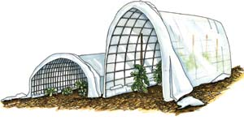

Garden Know-How: Extend Your Growing Season
Learning a few season extension techniques can help you start your garden up to six weeks earlier and enjoy fresh food sooner.
By Barbara Pleasant
February/March 2007
As late winter days lengthen, resourceful gardeners scurry to collect cloches, erect plastic-covered tunnels and put together a workable cold frame. Using season-stretching devices such as these can add four to six weeks to the front end of your growing season (and many of them will be handy again in the fall).
You can make an amazing array of season-stretching garden gear from found or recycled materials, and you won’t have to rely on electric grow lights to get delectable spring greens in time for Easter or have the first ripe tomatoes on your block. Creating season-extending equipment is fun because you’re working with free solar energy. The trick is to come up with simple structures that can withstand strong winds, shed rain and snow, and absorb and store solar warmth for the plants you’re protecting.
Physical shelter from blustery weather will help any plant, but cool-natured plants such as lettuce, spinach and cabbage-family crops don’t need as much heat as tender tomatoes or peppers - especially at night. Simple plastic cloches or plastic-covered cold frames raise nighttime temperatures 4 to 5 degrees, but you can double that number by throwing on an insulating blanket in the evening. Or triple the protection by adding black water bottles (see “Solar-charged Hot Water Bottles”), which release stored daytime warmth after the sun goes down.
Try Creative Cloches
Low, transparent individual plant protectors, called cloches, are the season-stretchers of choice for plants spaced more than 8 inches apart, such as tomatoes and peppers. Most gardeners keep a stash of cloches made from translucent plastic milk jugs or clear plastic bottles. I pick up roomy plastic juice jugs with handles at my local recycling center.
Before cutting off the bottom of any jug, I make a vee-shaped slit in the top of the handle. Later, I can shove a long, slender stick through the slit and down into the soil to help hold the cloche steady in the wind.
Even when anchored by mulch, strong winds may blow away many cloches - except for heavy ones such as the Wall O’ Waters (see photo), which weigh about 25 pounds when filled. A circle of water-filled plastic drink bottles duct-taped together (see illustration) is heavy enough to stay put and hold down the edges of a sheet of plastic tucked around the cloche for extra frost protection. Countless other items make great emergency cloches for freaky cold spells, including plastic cake covers, upturned flowerpots, cardboard boxes, buckets, baskets, and old lampshades or light fixtures.
Make Terrific Tunnels
Plastic-covered tunnels make perfect mini-greenhouses for early spring planting. You also can use one to harden off seedlings started indoors. Low tunnels stand firmer in wind than high ones, and tunnels that must hold up under heavy snow loads benefit from sturdy support. Supporting a tunnel is a great job for fence wire or concrete reinforcing wire. Or, you can go with simple hoops if you keep your tunnels low and tight. I make hoops from slender green saplings cut from the woods, or you can use stiff wire or small diameter plastic pipe. Got raised beds? Attach matching pairs of pipe brackets to the outside of the beds’ sides, and you have instant sleeves for support hoops.
My first tries with tunnels led to long tramps through the woods to retrieve windblown sheets of plastic, but not anymore. After trying edge-weights from bricks to warped landscaping timbers, I’ve settled on angular (rather than round) pieces of firewood, wrapped over twice with the plastic. When cutting plastic for a tunnel, allow a generous 2-foot overhang on both sides so you’ll have enough to wrap around whatever weights you decide to use to secure your tunnel’s edges.
Extra warmth in the daytime is often a plus, too, though it can become a problem if the enclosure lacks adequate ventilation. You can ventilate tunnels by using slitted plastic, which is a bit pricey and not widely available in small quantities, or by simply opening the ends of the tunnel and using clothespins or spring-clips to hold the bunched plastic open. Downward-facing vee-shaped vents cut in the sides of a tunnel and reinforced with duct tape improve ventilation, too. For extra insulation against cold, simply cover your tunnels with old blankets or bedspreads on frigid nights. During late-season winter storms, it won’t hurt the plants inside to leave the blankets on for up to four days.
Make Super-easy Mini-greenhouses
You can extend your growing season in spring and fall with these low-cost, easy-to-make plant protectors. Welded wire fencing with 2-by-4-inch openings works great for low tunnels that let you plant crops several weeks earlier than usual. Strips of 5-foot tall fencing can be bent (as shown here) to make a cover with 1-foot high sides that will protect a 30- to 36-inch wide bed of any length. Bend the wire to the shape you want, then lay it top-down onto a sheet of clear plastic. Fold the plastic up and over the long edges of the wire, then tape the edges down inside the tunnel with clear packaging tape. Leave a couple of feet of plastic at each end so you can fold it in to close the tunnel when the weather turns really cold. These lightweight tunnels are easy to lift off the bed so you can weed and water, and easy to stack when not in use. You can cover the wire frames with fabric row cover or bird netting and use them to protect crops from insect pests, birds or deer. If your site is windy, use “staples” made from wire coat hangers to stake down the tunnels.
For taller tunnels to protect tomatoes or other crops in the fall, concrete reinforcing wire will work better than the lighter weight welded-wire fencing. If you want to use the plastic for both spring and fall protection, use lengths of iron re-bar to hold down the plastic edges, rather than folding under and taping. This will allow you to easily remove the plastic during the hot months when it is not needed.
- Cheryl Long
Create Classic Cold Frames
A stationary cold frame is invaluable for hardening off tender seedlings, or you can make a movable one. (“Cold frame” refers to any unheated boxed-in growing area with a clear glass or plastic top to admit light and trap solar heat.) Opt for a well-built permanent cold frame if you have a great site, such as a south-facing slope for an earth-bermed version. Otherwise, it’s handy to be able to pop a portable frame over a bed of direct-sown crops for a week or two, and then move it to a place where it can serve as a halfway house for seedlings started indoors.
A wood frame covered with plastic sheeting makes a decent cold frame, or you can use hay bales (see illustration) for the walls. An old window still in its frame, with opening and closing hardware intact, makes a great top, and I’m happy as pie with the $5 shower door I found at my local Habitat for Humanity thrift store. Found items like these often come in strange sizes, so it’s best to get a top before you make a frame. You might need to get creative with hinges, too, especially if the window or door has a metal frame. Pieces of old bicycle inner tube stapled or screwed into place make good, inexpensive hinges. The wind won’t rip off your cold frame’s top if it’s secured to the base (when closed) or to sturdy wood stakes (when open) with screen-door hooks and eyes.
Other good season-stretching strategies include wrapping the outside of a tomato cage with clear plastic, or stapling bubble wrap over the top of a cardboard box with its top flaps folded in for added stability, and its bottom flaps folded out and held in place with bricks or stones. Use what you have! Until it got too nasty to keep, I used an old mattress pad for quickie overnight plant protection, and a friend is determined to find the best way to transform used Styrofoam take-out boxes into cloches. When it comes to inviting spring into your garden a few weeks early, a little imagination can go a long way.
Solar-charged Hot Water Bottles
Water-filled containers painted flat black absorb solar warmth during the day and release it at night, so they are worthwhile additions to your season-stretching toolbox. The squared sides of half-gallon milk jugs make them easy to stack into the back wall of a cold frame, or you can include a black water-filled barrel in your cold frame’s design.
In thousands of cold-climate gardens, bed warmers made from soft drink bottles are considered basic gardening equipment. Or the drink bottles can be duct-taped into cylinders, like the one shown at right, to give tomatoes, peppers and other tender seedlings an earlier start.
- Over the next year, contributing editor Barbara Pleasant will explain and elaborate on essential “Garden Know-how” for both beginning and experienced gardeners.
Got More Great Ideas?We’re betting some of you are sitting there thinking, “Oh rats, she should have mentioned _________; it works so well.” If you need more season extension ideas or instructions, here are some previous articles you can read online at www.MotherEarthNews.com.
- Mother |
|
 ROBIN WIMBISCUS Plastic-covered tunnels make perfect mini-greenhouses for early spring planting. |
ROBIN WIMBISCUS Straw or hay bales can easily be combined with an old window to make a nifty cold frame. |
ROBIN WIMBISCUS Water-filled containers painted flat black absorb solar warmth during the day and release it at night, so they are worthwhile additions to your season-stretching toolbox. |
 WALTER CHANDOHA Wall O’ Waters are circular cloches, 18 inches tall and 18 inches wide, made of connected, translucent plastic tubes that you fill with water. They absorb and store daytime warmth and moderate cold while providing dependable wind protection. |
|
|